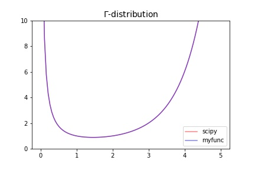
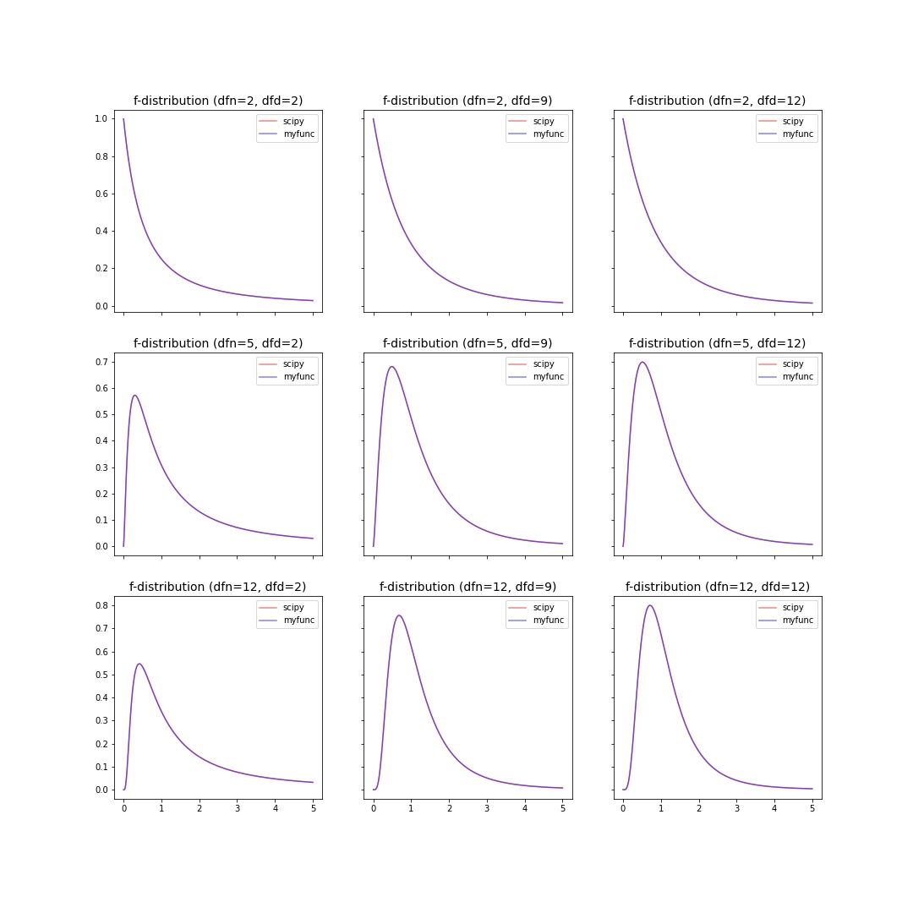
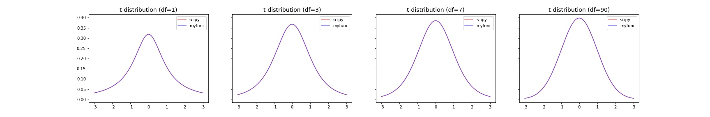
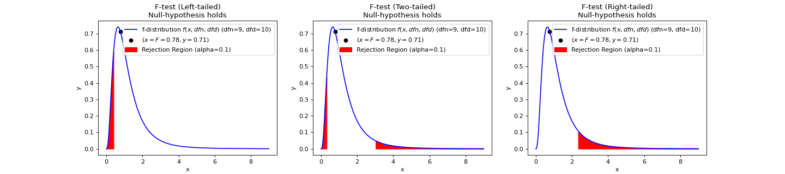
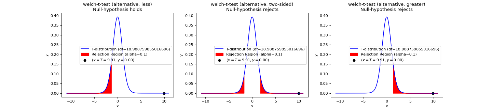
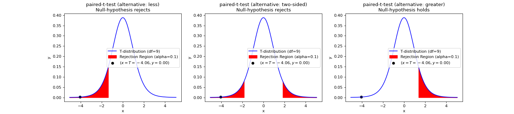
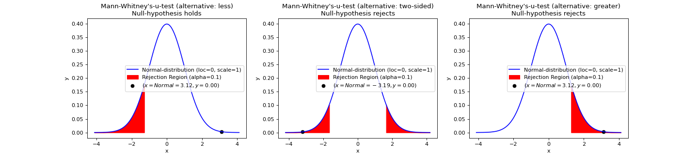
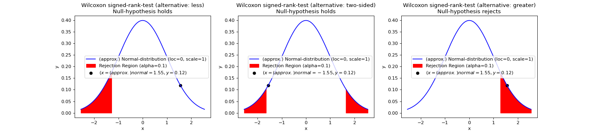

teilab.statistics module¶
This submodule contains various functions and classes that are useful for statistical testing.
Instructions¶
Statistical hypothesis testing¶
Statistical hypothesis testing is required to determine if expression levels (gProcessedSignal s) have changed between samples with siRNA and those without siRNA.
A statistical hypothesis test is a method of statistical inference. An alternative hypothesis is proposed for the probability distribution of the data. The comparison of the two models is deemed statistically significant if, according to a threshold probability—the significance level ( \(\alpha\) ) — the data would be unlikely to occur if the null hypothesis were true. The pre-chosen level of significance is the maximal allowed “false positive rate”. One wants to control the risk of incorrectly rejecting a true null hypothesis.
The process of distinguishing between the null hypothesis and the alternative hypothesis is aided by considering two conceptual types of errors.
The first type of error occurs when the null hypothesis is wrongly rejected. (type 1 error)
The second type of error occurs when the null hypothesis is wrongly not rejected. (type 2 error)
Hypothesis tests based on statistical significance are another way of expressing confidence intervals (more precisely, confidence sets). In other words, every hypothesis test based on significance can be obtained via a confidence interval, and every confidence interval can be obtained via a hypothesis test based on significance. 1
See also
Various alternative hypotheses can be handled by changing the value of A
In this submodules, you can test each null (alternative) hypothesis by changing the value of alternative
Terminology |
|
Alternative Hypothesis |
Rejection Region |
|---|---|---|---|
right-tailed |
|
\(H_a:\sigma^2_1 > \sigma^2_2\) |
\(\mathbf{F}\geq F_{\alpha}\) |
left-tailed |
|
\(H_a:\sigma^2_1 < \sigma^2_2\) |
\(\mathbf{F}\leq F_{1−\alpha}\) |
two-tailed |
|
\(H_a:\sigma^2_1 \neq \sigma^2_2\) |
\(\mathbf{F}\leq F_{1−\alpha∕2}\) or \(\mathbf{F}\geq F_{\alpha∕2}\) |
Follow the chart below to select the test.
![digraph RAMPreprocessingGraph {
graph [
charset = "UTF-8";
label = "Statistical Hypothesis Testing",
labelloc = "t",
labeljust = "c",
bgcolor = "#1f441e",
fontcolor = "white",
fontsize = 18,
style = "filled",
rankdir = TB,
margin = 0.2,
ranksep = 1.0,
nodesep = 0.9,
layout = "dot",
compound = true,
];
node [
shape = diamond,
style = "solid,filled",
fontsize = 16,
fontcolor = 6,
fontname = "fantasy",
color = "#cee6b4",
fillcolor = "#9ecca4",
fixedsize = false,
margin = "0.05",
];
distribution [label="Distribution"];
numSamples1 [label="Number of Samples"];
numSamples2 [label="Number of Samples"];
sampleRelationships11 [label="Relationship of Samples"];
sampleRelationships21 [label="Relationship of Samples"];
sampleRelationships22 [label="Relationship of Samples"];
node [
shape = rect,
style = "solid,filled",
fontsize = 20,
fontcolor = 6,
fontname = "times",
color = "#cee6b4",
fillcolor = "#fff5b7",
fixedsize = false,
margin = "0",
];
f_test [label = <<table border="0" cellspacing="10" bgcolor="white"><tr><td></td><td port="varname" align="left" border="1" color="#e1e4e5" bgcolor="white" width="70" fixedsize="true"><font point-size="16" face="monaco" color="#e74c3c">f_test</font></td><td></td></tr><tr><td colspan="3" port="location"><font face="times">F-test</font></td></tr></table>>]
paired_t_test [label = <<table border="0" cellspacing="10" bgcolor="white"><tr><td></td><td port="varname" align="left" border="1" color="#e1e4e5" bgcolor="white" width="130" fixedsize="true"><font point-size="16" face="monaco" color="#e74c3c">paired_t_test</font></td><td></td></tr><tr><td colspan="3" port="location"><font face="times">Paired t-test</font></td></tr></table>>]
student_t_test [label = <<table border="0" cellspacing="10" bgcolor="white"><tr><td></td><td port="varname" align="left" border="1" color="#e1e4e5" bgcolor="white" width="140" fixedsize="true"><font point-size="16" face="monaco" color="#e74c3c">student_t_test</font></td><td></td></tr><tr><td colspan="3" port="location"><font face="times">Student's t-test</font></td></tr></table>>]
welch_t_test [label = <<table border="0" cellspacing="10" bgcolor="white"><tr><td></td><td port="varname" align="left" border="1" color="#e1e4e5" bgcolor="white" width="120" fixedsize="true"><font point-size="16" face="monaco" color="#e74c3c">welch_t_test</font></td><td></td></tr><tr><td colspan="3" port="location"><font face="times">Welch's t-test</font></td></tr></table>>]
anova [label = <<table border="0" cellspacing="10" bgcolor="white"><tr><td></td><td port="varname" align="left" border="1" color="#e1e4e5" bgcolor="white" width="60" fixedsize="true"><font point-size="16" face="monaco" color="#e74c3c">anova</font></td><td></td></tr><tr><td colspan="3" port="location"><font face="times">ANOVA</font></td></tr></table>>]
wilcoxon_test [label = <<table border="0" cellspacing="10" bgcolor="white"><tr><td></td><td port="varname" align="left" border="1" color="#e1e4e5" bgcolor="white" width="130" fixedsize="true"><font point-size="16" face="monaco" color="#e74c3c">wilcoxon_test</font></td><td></td></tr><tr><td colspan="3" port="location"><font face="times">Wilcoxon signed-rank test</font></td></tr></table>>]
u_test [label = <<table border="0" cellspacing="10" bgcolor="white"><tr><td></td><td port="varname" align="left" border="1" color="#e1e4e5" bgcolor="white" width="190" fixedsize="true"><font point-size="16" face="monaco" color="#e74c3c">mann_whitney_u_test</font></td><td></td></tr><tr><td colspan="3" port="location"><font face="times">Mann-Whitney U test</font></td></tr></table>>]
friedman_test [label = <<table border="0" cellspacing="10" bgcolor="white"><tr><td></td><td port="varname" align="left" border="1" color="#e1e4e5" bgcolor="white" width="130" fixedsize="true"><font point-size="16" face="monaco" color="#e74c3c">friedman_test</font></td><td></td></tr><tr><td colspan="3" port="location"><font face="times">Friedman test</font></td></tr></table>>]
kruskal_wallis_test [label = <<table border="0" cellspacing="10" bgcolor="white"><tr><td></td><td port="varname" align="left" border="1" color="#e1e4e5" bgcolor="white" width="190" fixedsize="true"><font point-size="16" face="monaco" color="#e74c3c">kruskal_wallis_test</font></td><td></td></tr><tr><td colspan="3" port="location"><font face="times">Kruskal-wallis test</font></td></tr></table>>]
edge [
style = solid,
fontsize = 14,
fontname = "times",
fontcolor = white,
color = white,
labelfloat = false,
arrowhead = vee,
headport = n,
arrowsize = 1.5,
];
subgraph cluster_1 {
label = "Parametric Test";
labelloc = "t";
labeljust = "c";
fillcolor = "#89898989";
fontcolor = "#ffd56b";
margin = 20;
distribution -> numSamples1 [label="Under\n(Normal) Distribution" color="#f4c7ab" fontcolor="#f4c7ab"];
numSamples1 -> sampleRelationships11 [label="2" tailport=sw color="#f4c7ab" fontcolor="#f4c7ab"];
subgraph cluster_11{
label = "Two-Sample Test";
sampleRelationships11 -> paired_t_test [label="Paired" tailport=sw color="#f4c7ab" fontcolor="#f4c7ab"];
sampleRelationships11 -> welch_t_test [label="Independent" tailport=se color="#deedf0" fontcolor="#deedf0"style="dashed"];
sampleRelationships11 -> f_test [label="Independent" tailport=se color="#deedf0" fontcolor="#deedf0"];
f_test -> student_t_test [label="P > α" color="#f4c7ab" fontcolor="#f4c7ab"];
f_test -> welch_t_test [label="P < α" color="#deedf0" fontcolor="#deedf0"];
}
subgraph cluster_12{
label = "Multiple-Sample Test"
numSamples1 -> anova [label=">2" tailport=se color="#deedf0" fontcolor="#deedf0"];
}
};
subgraph cluster_2 {
label = "Parametric Test";
labelloc = "t";
labeljust = "c";
fillcolor = "#89898989";
fontcolor = "#ffd56b";
margin = 20;
distribution -> numSamples2 [label="Distribution-free" color="#deedf0" fontcolor="#deedf0"];
numSamples2 -> sampleRelationships21 [label="2" tailport=sw color="#f4c7ab" fontcolor="#f4c7ab"];
numSamples2 -> sampleRelationships22 [label=">2" tailport=se color="#deedf0" fontcolor="#deedf0"];
subgraph cluster_21{
label = "Two-Sample Test";
sampleRelationships21 -> wilcoxon_test [label="Paired" tailport=sw color="#f4c7ab" fontcolor="#f4c7ab"];
sampleRelationships21 -> u_test [label="Independent" tailport=se color="#deedf0" fontcolor="#deedf0"];
}
subgraph cluster_22{
label = "Multiple-Sample Test"
sampleRelationships22 -> friedman_test [label="Paired" tailport=sw color="#f4c7ab" fontcolor="#f4c7ab"];
sampleRelationships22 -> kruskal_wallis_test [label="Independent" tailport=se color="#deedf0" fontcolor="#deedf0"];
}
};
{rank=same; distribution;}
{rank=same; numSamples1; numSamples2;}
{rank=same; sampleRelationships11; sampleRelationships21; sampleRelationships22;}
{rank=same; f_test;}
{rank=same; paired_t_test; student_t_test; welch_t_test; anova; wilcoxon_test; u_test; friedman_test; kruskal_wallis_test}
}](_images/graphviz-97a16a405e263a050f529cf4d5bbe45de441a70f.png)
Distributions¶
gamma-distribution¶
The gamma function is defined as
\[\Gamma(z) = \int_0^\infty t^{z-1} e^{-t} dt\]
for \(\Re(z) > 0\) and is extended to the rest of the complex plane by analytic continuation.
The gamma function is often referred to as the generalized factorial since \(\Gamma(n + 1) = n!\) for natural numbers \(n\). More generally it satisfies the recurrence relation \(\Gamma(z + 1) = z \cdot \Gamma(z)\) for complex \(z\), which, combined with the fact that \(\Gamma(1) = 1\), implies the above identity for \(z = n\).
>>> import numpy as np
>>> import matplotlib.pyplot as plt
>>> from scipy.special import gamma
>>> from scipy.integrate import quad
>>> def gamma_pdf(x):
... return quad(func=lambda x,z:np.power(x, z-1)*np.exp(-x), a=0, b=np.inf, args=(x))[0]
>>> x = np.linspace(1e-2, 5, 100)
>>> fig, ax = plt.subplots(figsize=(6, 4))
>>> ax.plot(x, gamma(x), color="red", alpha=0.5, label="scipy")
>>> ax.plot(x, np.vectorize(gamma_pdf)(x), color="blue", alpha=0.5, label="myfunc")
>>> ax.set_title(fr"$\Gamma$-distribution", fontsize=14)
>>> ax.legend()
>>> ax.set_ylim(0, 10)
>>> fig.savefig("statistics.distributions.gamma.jpg")
Results |
|---|
|  |
f-distribution¶
The probability density function for f is:
for \(x > 0\).
>>> import numpy as np
>>> import matplotlib.pyplot as plt
>>> from scipy import stats
>>> from scipy.special import beta
>>> def f_pdf(x,dfn,dfd):
... return (dfd**(dfd/2) * dfn**(dfn/2) * x**(dfn/2-1)) / ((dfd+dfn*x)**((dfn+dfd)/2) * beta(dfn/2, dfd/2))
>>> dfns = [2,5,12]; dfds = [2,9,12]
>>> x = np.linspace(0.001, 5, 1000)
>>> fig, axes = plt.subplots(nrows=len(dfns), ncols=len(dfds), sharex=True, sharey="row", figsize=(5*len(dfns), 5*len(dfds)))
>>> for axes_row, dfn in zip(axes, dfns):
... for ax, dfd in zip(axes_row, dfds):
... ax.plot(x, stats.f.pdf(x, dfn=dfn, dfd=dfd), color="red", alpha=0.5, label="scipy")
... ax.plot(x, f_pdf(x, dfn=dfn,dfd=dfd), color="blue", alpha=0.5, label="myfunc")
... ax.set_title(f"f-distribution (dfn={dfn}, dfd={dfd})", fontsize=14)
... ax.legend()
>>> fig.show()
Results |
|---|
|  |
t-distribution¶
The probability density function for t is:
where \(x\) is a real number and the degrees of freedom parameter \(\nu\) satisfies \(\nu > 0\).
>>> import numpy as np
>>> import matplotlib.pyplot as plt
>>> from scipy import stats
>>> from scipy.special import gamma
>>> def t_pdf(x,df):
... return gamma((df+1)/2) / (np.sqrt(np.pi*df)*gamma(df/2)) * (1+x**2/df)**(-(df+1)/2)
>>> x = np.linspace(-3, 3, 1000)
>>> dfs = [1,3,7,90]
>>> fig, axes = plt.subplots(nrows=1, ncols=len(dfs), sharey="row", figsize=(6*len(dfs), 4))
>>> for ax,df in zip(axes,dfs):
... ax.plot(x, stats.t.pdf(x, df=df), color="red", alpha=0.5, label="scipy")
... ax.plot(x, t_pdf(x, df=df), color="blue", alpha=0.5, label="myfunc")
... ax.set_title(f"t-distribution (df={df})", fontsize=14)
... ax.legend()
>>> fig.show()
Results |
|---|
|  |
Python Objects¶
- class teilab.statistics.TestResult(statistic: float, pvalue: float, alpha: float, alternative: str, accepts: Tuple[float, float], distribution: callable, distname: str = '', testname: str = '')[source]¶
Bases:
objectStructure that holds test results.
- Parameters
statistic (float) – Test-specific statistical value.
pvalue (float) – The probability that an observed difference could have occurred just by random chance.
alpha (float) – The probability of making the wrong decision when the null hypothesis is true.
alternative (str) – Defines the alternative hypothesis. Please choose from [
"two-sided","less","greater"]accepts (Tuple[float,float]) – Regions that accepts the null hypothesis.
distribution (callable) – Distribution used during the test.
distname (str, optional) – The distribution name. Defaults to
"".testname (str, optional) – The test name. Defaults to
"".
- does_H0_hold¶
Does the null hypothesis hold?
- Type
bool
- plot(x: Optional[nptyping.types._ndarray.NDArray[typing.Any, nptyping.types._object.Object]] = None, ax: Optional[matplotlib.axes._axes.Axes] = None) → matplotlib.axes._axes.Axes[source]¶
Plot the test result.
- Parameters
x (Optional[NDArray[Any, Number]], optional) – X-axis Values. Defaults to
None.ax (Optional[Axes], optional) – An instance of
Axes. Defaults toNone.
- Returns
An instance of
Axeswith test result.- Return type
Axes
- teilab.statistics.f_test(a: nptyping.types._ndarray.NDArray[typing.Any, nptyping.types._object.Object], b: nptyping.types._ndarray.NDArray[typing.Any, nptyping.types._object.Object], alpha: float = 0.05, alternative: str = 'two-sided', plot: bool = False, ax: Optional[matplotlib.axes._axes.Axes] = None) → teilab.statistics.TestResult[source]¶
F-test for Equality of TWO Variances.
If the two populations are normally distributed and if \(H_0:\sigma^2_1=\sigma^2_2\) is true then under independent sampling \(F\) approximately follows an F-distribution (\(f(x, df_1, df_2)\)) with degrees of freedom \(df_1=n_1−1\) and \(df_2=n_2−1\).
Statistic ( \(F\) )
\[F={\frac {S_{A}^{2}}{S_{B}^{2}}}\]- Parameters
a (NDArray[Any, Number]) – (Observed) Samples. The arrays must have the same shape.
b (NDArray[Any, Number]) – (Observed) Samples. The arrays must have the same shape.
alpha (float) – The probability of making the wrong decision when the null hypothesis is true.
alternative (str, optional) – Defines the alternative hypothesis. Please choose from [
"two-sided","less","greater"]. Defaults to"two-sided".plot (bool, optional) – Whether to plot F-distribution or not. Defaults to
False.ax (Optional[Axes], optional) – An instance of
Axes. The distribution is drawn here whenplotisTrue. Defaults toNone.
- Returns
Structure that holds F-test results.
- Return type
- Raises
KeyError – When
alternativeis not selected from ["two-sided","less","greater"].
>>> import numpy as np >>> from teilab.utils import subplots_create >>> from teilab.statistics import f_test >>> fig, axes = subplots_create(ncols=3, figsize=(18,4), style="matplotlib") >>> A = np.array([6.3, 8.1, 9.4, 10.4, 8.6, 10.5, 10.2, 10.5, 10.0, 8.8]) >>> B = np.array([4.8, 2.1, 5.1, 2.0, 4.0, 1.0, 3.4, 2.7, 5.1, 1.4, 1.6]) >>> for ax,alternative in zip(axes,["less","two-sided","greater"]): ... f_test(A, B, alternative=alternative, plot=True, alpha=.1, ax=ax) >>> fig.show()

See also
- teilab.statistics.student_t_test(a: nptyping.types._ndarray.NDArray[typing.Any, nptyping.types._object.Object], b: nptyping.types._ndarray.NDArray[typing.Any, nptyping.types._object.Object], alpha: float = 0.05, alternative: str = 'two-sided', plot: bool = False, ax: Optional[matplotlib.axes._axes.Axes] = None) → teilab.statistics.TestResult[source]¶
T-test for Equality of averages of TWO INDEPENDENT samples. (SIMILAR VARIANCES)
Statistic ( \(T\) )
\[T={\frac{\overline{A}-{\overline{B}}}{s_p\cdot {\sqrt {\frac{1}{n_A}+\frac{1}{n_B}}}}}\]where
\[s_p=\sqrt{\frac {\left(n_A-1\right)s_A^2+\left(n_B-1\right)s_B^2}{n_A+n_B-2}}\]- Parameters
a (NDArray[Any, Number]) – (Observed) Samples. The arrays must have the same shape.
b (NDArray[Any, Number]) – (Observed) Samples. The arrays must have the same shape.
alpha (float) – The probability of making the wrong decision when the null hypothesis is true.
alternative (str, optional) – Defines the alternative hypothesis. Please choose from [
"two-sided","less","greater"]. Defaults to"two-sided".plot (bool, optional) – Whether to plot F-distribution or not. Defaults to
False.ax (Optional[Axes], optional) – An instance of
Axes. The distribution is drawn here whenplotisTrue. Defaults toNone.
- Returns
Structure that holds student’s T-test results.
- Return type
- Raises
KeyError – When
alternativeis not selected from ["two-sided","less","greater"].
>>> import numpy as np >>> from teilab.utils import subplots_create >>> from teilab.statistics import student_t_test >>> fig, axes = subplots_create(ncols=3, figsize=(18,4), style="matplotlib") >>> A = np.array([6.3, 8.1, 9.4, 10.4, 8.6, 10.5, 10.2, 10.5, 10.0, 8.8]) >>> B = np.array([4.8, 2.1, 5.1, 2.0, 4.0, 1.0, 3.4, 2.7, 5.1, 1.4, 1.6]) >>> for ax,alternative in zip(axes,["less","two-sided","greater"]): ... student_t_test(A, B, alternative=alternative, plot=True, alpha=.1, ax=ax) >>> fig.show()

- teilab.statistics.welch_t_test(a: nptyping.types._ndarray.NDArray[typing.Any, nptyping.types._object.Object], b: nptyping.types._ndarray.NDArray[typing.Any, nptyping.types._object.Object], alpha: float = 0.05, alternative: str = 'two-sided', plot: bool = False, ax: Optional[matplotlib.axes._axes.Axes] = None) → teilab.statistics.TestResult[source]¶
T-test for Equality of averages of TWO INDEPENDENT samples. (DIFFERENT VARIANCES)
Statistic ( \(T\) )
\[T=\frac{\Delta\overline {X}}{s_{\Delta\overline{X}}}=\frac{\overline{X}_1-\overline{X}_2}{\sqrt{{s^2_{\overline{X}_1}}+s^2_{\overline{X}_{2}}}}\]where
\[s_{{\overline{X}}_{i}}={s_i\over{\sqrt{N_i}}}\]- Parameters
a (NDArray[Any, Number]) – (Observed) Samples. The arrays must have the same shape.
b (NDArray[Any, Number]) – (Observed) Samples. The arrays must have the same shape.
alpha (float) – The probability of making the wrong decision when the null hypothesis is true.
alternative (str, optional) – Defines the alternative hypothesis. Please choose from [
"two-sided","less","greater"]. Defaults to"two-sided".plot (bool, optional) – Whether to plot F-distribution or not. Defaults to
False.ax (Optional[Axes], optional) – An instance of
Axes. The distribution is drawn here whenplotisTrue. Defaults toNone.
- Returns
Structure that holds welch’s T-test results.
- Return type
- Raises
KeyError – When
alternativeis not selected from ["two-sided","less","greater"].
>>> import numpy as np >>> from teilab.utils import subplots_create >>> from teilab.statistics import welch_t_test >>> fig, axes = subplots_create(ncols=3, figsize=(18,4), style="matplotlib") >>> A = np.array([6.3, 8.1, 9.4, 10.4, 8.6, 10.5, 10.2, 10.5, 10.0, 8.8]) >>> B = np.array([4.8, 2.1, 5.1, 2.0, 4.0, 1.0, 3.4, 2.7, 5.1, 1.4, 1.6]) >>> for ax,alternative in zip(axes,["less","two-sided","greater"]): ... welch_t_test(A, B, alternative=alternative, plot=True, alpha=.1, ax=ax) >>> fig.show()

- teilab.statistics.paired_t_test(a: nptyping.types._ndarray.NDArray[typing.Any, nptyping.types._object.Object], b: nptyping.types._ndarray.NDArray[typing.Any, nptyping.types._object.Object], alpha: float = 0.05, alternative: str = 'two-sided', plot: bool = False, ax: Optional[matplotlib.axes._axes.Axes] = None) → teilab.statistics.TestResult[source]¶
T-test for Equality of averages of TWO RELATED samples.
Statistic ( \(T\) )
\[T=\frac{\overline{D}}{S_D/\sqrt{N}}\]where \(D\) is the sample differences ( \(D=A-B\) ), \(N\) is the sample length ( \(N=\mathrm{len}(A)=\mathrm{len}(B)\))
- Parameters
a (NDArray[Any, Number]) – (Observed) Samples. The arrays must have the same shape.
b (NDArray[Any, Number]) – (Observed) Samples. The arrays must have the same shape.
alpha (float) – The probability of making the wrong decision when the null hypothesis is true.
alternative (str, optional) – Defines the alternative hypothesis. Please choose from [
"two-sided","less","greater"]. Defaults to"two-sided".plot (bool, optional) – Whether to plot F-distribution or not. Defaults to
False.ax (Optional[Axes], optional) – An instance of
Axes. The distribution is drawn here whenplotisTrue. Defaults toNone.
- Returns
Structure that holds paired T-test results.
- Return type
- Raises
TypeError – When the arrays
aandbhave the different shapes.KeyError – When
alternativeis not selected from ["two-sided","less","greater"].
>>> import numpy as np >>> from teilab.utils import subplots_create >>> from teilab.statistics import paired_t_test >>> fig, axes = subplots_create(ncols=3, figsize=(18,4), style="matplotlib") >>> A = np.array([0.7, -1.6, -0.2, -1.2, -0.1, 3.4, 3.7, 0.8, 0.0, 2.0]) >>> B = np.array([1.9, 0.8, 1.1, 0.1, -0.1, 4.4, 5.5, 1.6, 4.6, 3.4]) >>> for ax,alternative in zip(axes,["less","two-sided","greater"]): ... paired_t_test(A, B, alternative=alternative, plot=True, alpha=.1, ax=ax) >>> fig.show()
See also
- teilab.statistics.mann_whitney_u_test(a: nptyping.types._ndarray.NDArray[typing.Any, nptyping.types._object.Object], b: nptyping.types._ndarray.NDArray[typing.Any, nptyping.types._object.Object], alpha: float = 0.05, alternative: str = 'two-sided', use_continuity: bool = True, plot: bool = False, ax: Optional[matplotlib.axes._axes.Axes] = None) → teilab.statistics.TestResult[source]¶
NON-PARAMETRIC-test for Equality of averages of TWO INDEPENDENT samples.
Mann–Whitney U test is used as significance
Statistic ( \(U\) )
Let \(A_{1},\ldots, A_{n}\) be an i.i.d. sample from \(A\), and \(B_{1},\ldots ,B_{m}\) be an i.i.d. sample from \(B\), and both samples independent of each other. The corresponding Mann-Whitney \(U\) statistic is defined as:
\[U=\sum_{i=1}^{n_A}\sum_{j=1}^{n_B}S(A_{i},B_{j})\]with
\[\begin{split}S(A,B)={\begin{cases}1,&{\text{if }}B<A,\\{\tfrac {1}{2}},&{\text{if }}B=A,\\0,&{\text{if }}B>A.\end{cases}}\end{split}\]In direct method, for each observation in sample
a, the sum of the number of observations in samplebfor which a smaller value was obtained is the \(U_A\) .In other method, \(U_A\) is given by:
\[U_A=R_A-\frac{n_A(n_A+1)}{2}\]where \(n_A\) is the sample size for sample
a, and \(R_A\) is the sum of the ranks in sampleabecause \(\frac{n_A(n_A+1)}{2}\) is the sum of all the ranks ofawithin samplea.Knowing that \(R_A+R_B=N(N+1)/2\) and \(N=n_A+n_B\), we find that the sum is
\[\begin{split}U_A + U_B &= \left(R_A - \frac{n_A(n_A+1)}{2}\right) + \left(R_B - \frac{n_B(n_B+1)}{2}\right) \\ &= \underbrace{\left(R_A + R_B\right)}_{(N)(N+1)/2} - \frac{1}{2}\left(n_A(n_A+1) + n_B(n_B+1)\right)\\ &= n_An_B.\end{split}\]For large ( \(>20\) ) samples, \(U\) is approximately normally distributed. In this case, the standardized value
\[z={\frac {U-m_{U}}{\sigma _{U}}}\]where \(m_U\) and \(\sigma_U\) are the mean and standard deviation of \(U\), is approximately a standard normal deviate whose significance can be checked in tables of the normal distribution. \(m_U\) and \(\sigma_U\) are given by
\[\begin{split}m_U={\frac {n_An_B}{2}},\ \text{and} \\ \sigma _{U}={\sqrt {\frac{n_An_B(n_A+n_B+1)}{12}}}.\end{split}\]The formula for the standard deviation is more complicated in the presence of tied ranks. If there are ties in ranks, \(\sigma\) should be corrected as follows:
\[\sigma _{\text{corr}}={\sqrt {\frac{n_An_B}{12}\left((N+1)-\sum_{i=1}^k\frac{t_i^3-t_i}{N(N-1)}\right)}}\]where \(N=n_A+n_B, t_i\) is the number of subjects sharing rank \(i\), and \(k\) is the number of (distinct) ranks.
Warning
How to calculate the statistic value is different from scipy.
- Parameters
a (NDArray[Any, Number]) – (Observed) Samples. The arrays must have the same shape.
b (NDArray[Any, Number]) – (Observed) Samples. The arrays must have the same shape.
alpha (float) – The probability of making the wrong decision when the null hypothesis is true.
alternative (str, optional) – Defines the alternative hypothesis. Please choose from [
"two-sided","less","greater"]. Defaults to"two-sided".use_continuity (bool, optional) – Whether a continuity correction (
1/2.) should be taken into account. Default isTrue.plot (bool, optional) – Whether to plot F-distribution or not. Defaults to
False.ax (Optional[Axes], optional) – An instance of
Axes. The distribution is drawn here whenplotisTrue. Defaults toNone.
- Returns
Structure that holds Mann-Whitney’s U-tesst results.
- Return type
- Raises
KeyError – When
alternativeis not selected from ["two-sided","less","greater"].ValueError – When all numbers are identical in mannwhitneyu.
>>> import numpy as np >>> from teilab.utils import subplots_create >>> from teilab.statistics import mann_whitney_u_test >>> fig, axes = subplots_create(ncols=3, figsize=(18,4), style="matplotlib") >>> A = np.array([1.83, 1.50, 1.62, 2.48, 1.68, 1.88, 1.55, 3.06, 1.30, 2.01, 3.11]) >>> B = np.array([0.88, 0.65, 0.60, 1.05, 1.06, 1.29, 1.06, 2.14, 1.29]) >>> for ax,alternative in zip(axes,["less","two-sided","greater"]): ... mann_whitney_u_test(A, B, alternative=alternative, plot=True, alpha=.1, ax=ax) >>> fig.show()

- teilab.statistics.wilcoxon_test(a: nptyping.types._ndarray.NDArray[typing.Any, nptyping.types._object.Object], b: nptyping.types._ndarray.NDArray[typing.Any, nptyping.types._object.Object], alpha: float = 0.05, alternative: str = 'two-sided', mode: str = 'auto', plot: bool = False, ax: Optional[matplotlib.axes._axes.Axes] = None) → teilab.statistics.TestResult[source]¶
NON-PARAMETRIC-test for Equality of representative values (medians) of TWO PAIRED samples.
This function is about the Wilcoxon signed-rank test which tests whether the distribution of the differences
a - bis symmetric about zero. It is a non-parametric version of thepaired_t_test.Note
Wilcoxon signed-rank test is different from Wilcoxon rank sum test which is equivalent to the
student_t_testorwelch_t_testin the parametric test.Statistic ( \(W\) )
Let \(N\) be the sample size, i.e., the number of pairs (\(A=a_i,\ldots,a_N, B=b_i,\ldots,b_N\)).
Exclude pairs with \(|a_i-b_i|=0\). Let \(N_r\) be the reduced sample size.
Order the remaining \(N_r\) pairs acoording to the absolute difference (\(|a_i-b_i|\)).
Rank the pairs. Ties receive a rank equal to the average og the ranks they span (
assign_rank(a-b, method="average")). Let \(R_i\) denote the rank.Calculate the test statistic \(W\) (the sum of the signed ranks)
\[\begin{split}W_{+}&=\sum_{i=1}^{N_r}\left[\operatorname{sgn}(a_i-b_i)\cdot R_{i}\right],\\ W_{-}&=\sum_{i=1}^{N_r}\left[-\operatorname{sgn}(a_i-b_i)\cdot R_{i}\right].\end{split}\]From the above, use \(W\) that matches the alternative hypothesis.
\[\begin{split}W=\begin{cases} \mathrm{min}\left(W_{+},W_{-}\right),&\text{if alternative hypothesis is "two-tailed"},\\ W_{+},&\text{otherwise.} \end{cases}\end{split}\]As \(N_r\) increases, the sampling distribution of \(W\) converges to a normal distribution. Thus,
For \(N_r\geq25\), a z-score can be calculated as
\[Z = \frac{\left|W-\frac{N_r(N_r+1)}{4}\right|}{\sqrt{\frac{N_r(N_r+1)(2N_r+1)}{24}}}\]For \(N_r<25\) the exact distribution needs to be used.
- Parameters
a (NDArray[Any, Number]) – (Observed) Samples. The arrays must have the same shape.
b (NDArray[Any, Number]) – (Observed) Samples. The arrays must have the same shape.
alpha (float) – The probability of making the wrong decision when the null hypothesis is true.
alternative (str, optional) – Defines the alternative hypothesis. Please choose from [
"two-sided","less","greater"]. Defaults to"two-sided".mode (str, optional) – Method to calculate the p-value. Please choose from [
"auto","exact","approx"]. Default is “auto”.plot (bool, optional) – Whether to plot F-distribution or not. Defaults to
False.ax (Optional[Axes], optional) – An instance of
Axes. The distribution is drawn here whenplotisTrue. Defaults toNone.
- Returns
Structure that holds wilcoxon-test results.
- Return type
- Raises
TypeError – When the arrays
aandbhave the different shapes.KeyError – When
alternativeis not selected from ["two-sided","less","greater"].ValueError – When all pairs are identical, or try to calculate
"exact"p-value with the sample size larger than25.
>>> import numpy as np >>> from teilab.utils import subplots_create >>> from teilab.statistics import wilcoxon_test >>> fig, axes = subplots_create(ncols=3, figsize=(18,4), style="matplotlib") >>> rnd = np.random.RandomState(0) >>> A,B = rnd.random_sample(size=(2,30)) >>> for ax,alternative in zip(axes,["less","two-sided","greater"]): ... wilcoxon_test(A, B, alternative=alternative, plot=True, alpha=.1, ax=ax) >>> fig.show()

- teilab.statistics.anova() → teilab.statistics.TestResult[source]¶
- teilab.statistics.friedman_test() → teilab.statistics.TestResult[source]¶
- teilab.statistics.kruskal_wallis_test() → teilab.statistics.TestResult[source]¶